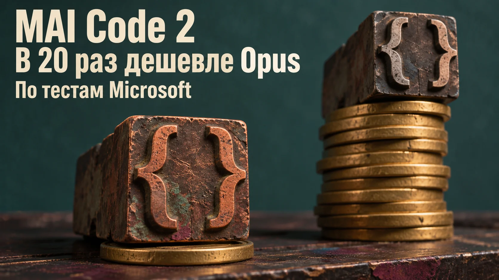

Новости ИИ
Новые модели, исследования, продукты и события индустрии искусственного интеллекта.
21 ноября 2026
Трамп и Си договорились: ИИ не должен сам начинать крупные военные операции
По словам министра финансов США Скотта Бессента, Трамп и Си договорились сохранять участие человека в военных решениях с ИИ и не допускать самостоятельного начала крупных операций.

Signal запретил скриншоты, чтобы Siri и Gemini не читали ваши переписки
Signal усилил защиту переписок от системных ИИ-помощников: блокировка захвата экрана на iPhone и Android, ручные исключения Siri на Mac.

США разрешили Китаю 880 тысяч ИИ-чипов — даже фирмам из военного списка Пентагона
Комитет Палаты представителей США раскрыл 21 разрешение на экспорт 879 868 ускорителей NVIDIA и AMD в Китай. Среди согласованных получателей — Alibaba, Tencent, Baidu и BYD.

Amazon разрешила ИИ тратить ваши деньги без спроса
Amazon Web Services открыла ИИ-агентам покупки платных инструментов через AWS Marketplace: агент тратит заранее выделенный бюджет, а платежи поступают на облачный счёт владельца.

Еврокомиссию атаковали с помощью ИИ: отключили даже систему отпусков
Еврокомиссия подтвердила применение ИИ в кибератаке, обнаруженной 22 октября. После инцидента отключали внутренние сервисы, включая кадровую систему; расследование продолжается.

Google пустила Gemini за ваш Mac: ИИ сам работает в программах, пока вы заняты
Google начала открывать платным подписчикам в США функцию Computer Use в Gemini для Mac: ИИ управляет разрешёнными приложениями в отдельном виртуальном окне и требует подтверждения чувствительных действий.

OpenAI начала тестировать Dots в ChatGPT Plus: ИИ работает даже после закрытия чата
OpenAI 19 ноября начала ограниченное тестирование персональных ИИ-агентов Dots у части подписчиков ChatGPT Plus. Программа пока недоступна всем пользователям Plus и имеет возрастные и региональные ограничения.
20 ноября 2026

Microsoft устроила ИИ-агентов на работу: выдала им почту и начальника
Microsoft внедряет автономных ИИ-сотрудников Foundry с собственными учётными записями и назначенными руководителями. В компании используют более 30 шаблонов таких агентов; права на документы выдаются отдельно.

Google открыла Genie 4: меняйте погоду и населяйте виртуальные миры одной фразой
Google открыла Genie 4 подписчикам AI Ultra и разработчикам: пользователи исследуют интерактивные миры и меняют окружение текстовыми командами на ходу. Среди новых демонстраций — муравьиная колония The Life of Ants.

Доверили ИИ деньги? Банк решил, что за его ошибки заплатите вы
Американские банки ужесточают условия для клиентов, которые доверяют доступ к счёту сторонним ИИ-агентам. Citi считает действия через переданные реквизиты авторизованными клиентом, однако федеральная защита от несанкционированных переводов сохраняется.

Anthropic провела крупнейшее IPO в истории — $81 млрд. А Nasdaq всё равно упал на 2,3%
Anthropic провела IPO на $81,34 млрд, крупнейшее размещение акций в истории. После первоначального скачка котировки снизились, а индекс Nasdaq потерял за день 2,25%.
19 ноября 2026

ИИ взламывал программы по их заплаткам: Berkeley насчитал 20 успехов из 100
В CyberBinGym ИИ-агенты сравнивали уязвимые и исправленные сборки без исходного кода. Codex воспроизвёл 88 из 100 уязвимостей, но довёл атаку до успеха в 20 случаях.

ИИ ищет лекарства от рака. Инвесторы вложили $5 млрд
Isomorphic Labs привлекла $5 млрд на разработку лекарств с ИИ спустя полгода после раунда на $2,1 млрд. Её программы в онкологии и иммунологии пока находятся на доклинической стадии.

Таможня насчитала на 50 тысяч ИИ-чипов NVIDIA больше, чем сама NVIDIA. США ведут расследование
При сверке таможенных данных с инвентаризацией NVIDIA обнаружилось расхождение примерно в 50 тысяч ИИ-чипов, связанных с поставками Megaspeed. Власти США раскрыли хронологию расследования, начатого в 2024 году.

НАТО уже использует до 300 миллиардов токенов OpenAI в месяц для защиты своих сетей
По данным OpenAI, структуры НАТО через NCIA используют до 300 млрд входных и выходных токенов в месяц для киберзащиты. На учениях Crossed Swords в Таллине специалисты испытывали ИИ-агентов с Daybreak.

Google выпустила Gemini 4 Neon: обогнала Claude Opus 5.5 и GPT-6.2 Sol в тестах
Google представила Gemini 4 Neon для программирования и задач ИИ-агентов. В Artificial Analysis модель набрала 61 балл; Google сравнивает её стоимость выполнения задач с Gemini 4 Carbon.

Microsoft создала ИИ для поиска уязвимостей: в тесте он обошёл GPT-6 Astra при затратах в 50 раз ниже
Microsoft представила MAI Cyber 2 Flash для поиска уязвимостей. В тесте CyberGym-E2E модель достигла 92,3% успешных заданий против 91,5% у GPT-6 Astra при затратах менее 2% стоимости конкурента.

Microsoft заявила, что её ИИ-программист почти сравнялся с Claude Opus при затратах в 20 раз ниже
Microsoft представила MAI Code 2 и MAI Code 2 Flash для программирования в GitHub Copilot. По четырём тестам компании MAI Code 2 достигла 96% результата Claude Opus 5.5 при 5% затрат с учётом временной скидки.

Google сделала ИИ-исполнителя бесплатным: он сам звонит в компании и оформляет покупки
Google начала бесплатно открывать Tasks in Gemini в шести странах. В США агент может обзванивать компании и готовить покупки с подтверждением владельца.